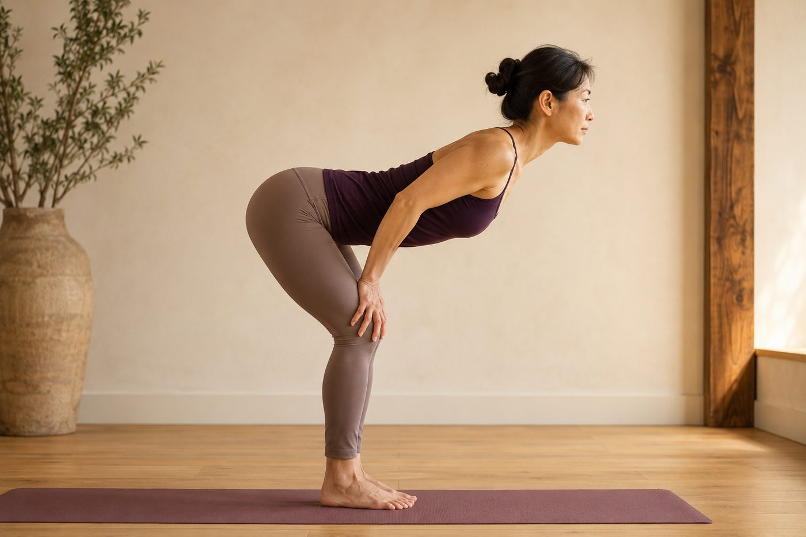

前彎的關鍵是先「摺髖」，不是先彎腰

你有沒有過這種經驗：站著想摸腳尖，頭跟肩膀拚命往下鑽，背拱成一個圓，指尖離地板還有一大截，隔天下背還隱隱發痠？很多人以為前彎就是「把腰彎下去」，但真正該動的地方，其實在更下面一點的髖關節。
前彎，到底是哪裡在「彎」？
我們習慣把前彎叫「彎腰」，但如果你真的一節一節從腰椎彎下去，麻煩就來了。腰椎，也就是下背那五節脊椎，天生活動度就小，它的本份是穩定和承重，不是大幅度前彎。你等於是讓下背同一個位置，一次又一次被推向極限，椎間盤長期承受這種反覆的前彎壓力並不理想。真正能做出大角度屈曲的，是你的髖關節——它是一個球窩關節，股骨的圓頭卡在骨盆的凹窩裡，活動範圍很大。
所以，一個安全又有效的前彎，是「骨盆連同整條脊椎，一起繞著髖關節往前倒」，脊椎全程維持它原本的自然曲線，像一塊完整的門板往前傾；而不是把門板從中間折斷。你以為前彎在練「腰的柔軟度」，其實你真正需要的，是髖關節的活動度，加上脊椎維持中立的能力。
前彎不是把脊椎折彎，而是讓骨盆繞著髖關節這個「門軸」往前倒，脊椎全程保持一直線。
為什麼「摺髖」才真的拉到腿後？
你的腿後肌群（膕旁肌）上端，接在骨盆最下方的坐骨上。當你正確摺髖、把屁股跟坐骨往後往上翹，坐骨就會遠離膝蓋後側，膕旁肌被拉長——這才是你想要的那種「腿後被伸展」的感覺。而且摺髖往下時，真正在後面「踩剎車」、控制你不要一次倒到底的，是臀大肌；核心的腹橫肌和多裂肌則像穿在腰上的一圈束帶，幫你把脊椎鎖在中立位。前彎其實是個全身協調的動作，不只是腿後在拉而已。
反過來，如果你用彎腰硬鑽下去，骨盆會被往後捲收（骨盆後傾），坐骨往下往前跑，膕旁肌其實是鬆的，你根本沒拉到它；所有的彎折都堆在被撐開的腰椎和椎間盤上，難怪愈練腰愈痠。這也是為什麼有些人〈腿後拉了很久還是很緊〉——不是不夠努力，是方向從一開始就錯了，力氣都花在彎腰而不是摺髖。
怎麼找到「摺髖」的感覺？
摺髖聽起來很抽象，但有幾個很好用的小訣竅，能幫你把感覺找回來：
- 手放髖褶：把指尖放在大腿最上緣、和骨盆交界那條褶線（髖褶）上，往前傾時想像用這條線去夾住手指，你會很清楚感覺到「折」發生在這裡，而不是腰。
- 把屁股往後推去「關門」：想像身後有一扇門，你要用臀部把它輕輕碰上。屁股先往後走，上半身自然跟著往前，這個順序會逼你從髖關節折、脊椎自然打直。
- 膝蓋別鎖死：很多人為了「腿要直」把膝蓋頂到底，反而卡住骨盆，只能從腰代償。膝蓋留一點微彎的彈性，骨盆才轉得動。
- 寧可短一點、也要背直：只前傾到一半、但脊椎是直的，遠比拱著背硬摸地板有價值。深度之後會來，順序對了才安全。
如果你在家怎麼折都覺得是腰在出力、始終找不到髖，壁繩會是很好的輔助。手抓著繩子、把身體往後坐進繩子的支撐裡，繩子幫你分擔一部分體重，你就能安心把屁股往後推、把脊椎拉長，慢慢體會「從髖關節折下去」是什麼感覺。想更完整搞懂自己前彎到底卡在哪，也可以看〈前彎摸不到腳尖，是柔軟度還是骨盆卡住〉。
與其一直拉，不如先看清楚你的骨盆和脊椎怎麼動
來教室做一次 AI 體態檢測（現場做），老師能實際看出你前彎時是從髖折、還是從腰代償、骨盆有沒有卡住，再給你一個對的起點。
預約首次 NT$199 AI 體態檢測今天可以先記住的一件事
如果這篇只留一句話，那就是——前彎先想「屁股往後」，不是「頭往下」。下次要摸腳尖之前，先手放髖褶、膝蓋鬆一點、把坐骨往後上翹，讓「折」發生在髖關節，而不是把腰拱成圓。一開始你可能只折到一半、指尖離地板還很遠，這完全沒關係：方向對了，腿後才會真正被拉長，腰也才不會愈練愈痠。深度會隨著髖的活動度和腿後彈性慢慢長出來，真的不用今天就到底。
本頁為體態與姿勢的一般衛教與練習分享，非醫療診斷或治療。若有疼痛、舊傷或特殊病史，請先諮詢合格醫療專業人員。